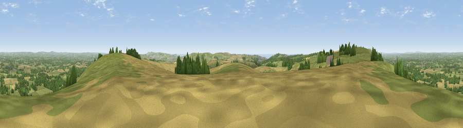

Viewpoint near Plumpton
#1287 in England · top 8% of its area beats it · near PlumptonThe view, rendered

A 360° render of this exact spot computed from the terrain model, tree cover and land cover — summer colours, afternoon light, calibrated against photographs of famous viewpoints. Real trees, hedges and buildings will differ in detail.
The panorama
Grey silhouette: terrain skyline in each direction (720 bearings, Earth curvature and refraction included). Dashed green: skyline with trees (+15 m) and buildings (+8 m) as obstacles. Blue strip: how far the ground is visible on each bearing.
Where the view opens
Wedge length = distance to the farthest visible ground on that bearing (vegetation-aware). Rings at 10, 25 and 50 km.
What fills the view
52% grassland · 23% cropland · 22% woodland · 2% built-up · 1% water
Angular shares of the visible panorama (visual magnitude), not map area. Landscape diversity 0.50 (0–1 Shannon).
Key numbers
More beautiful places nearby
The staircase of upgrades: each row has a higher view potential than everything closer. Driving times are estimates from straight-line distance, calibrated against real road routing — check an actual route before setting out.
| Place | Direction | Drive | Score |
|---|---|---|---|
| Viewpoint near Plumpton | E · 0 km | ~1 min | 79.2 |
| Viewpoint near Westmeston | WNW · 1 km | ~3 min | 80.9 |
| Ditchling Beacon | W · 3 km | ~6 min | 81.8 |
| Fulking Hill | W · 11 km | ~21 min | 82.2 |
| Viewpoint near Firle | SE · 12 km | ~23 min | 83.8 |
| Viewpoint near Firle | ESE · 14 km | ~25 min | 85.4 |
| Firle Beacon | ESE · 14 km | ~26 min | 88.9 |
| Viewpoint near Niton | WSW · 93 km | ~118 min | 89.2 |
50.89716, -0.07120 · source: screening · position refined by local search. Computed location — check access rights before visiting.